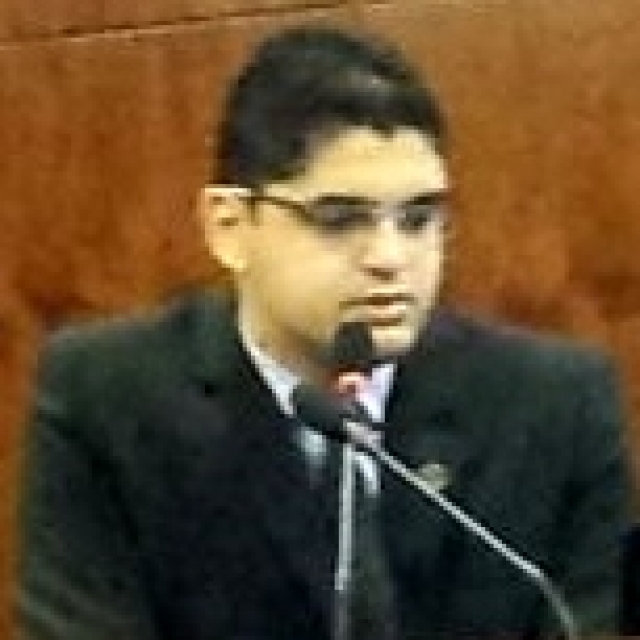
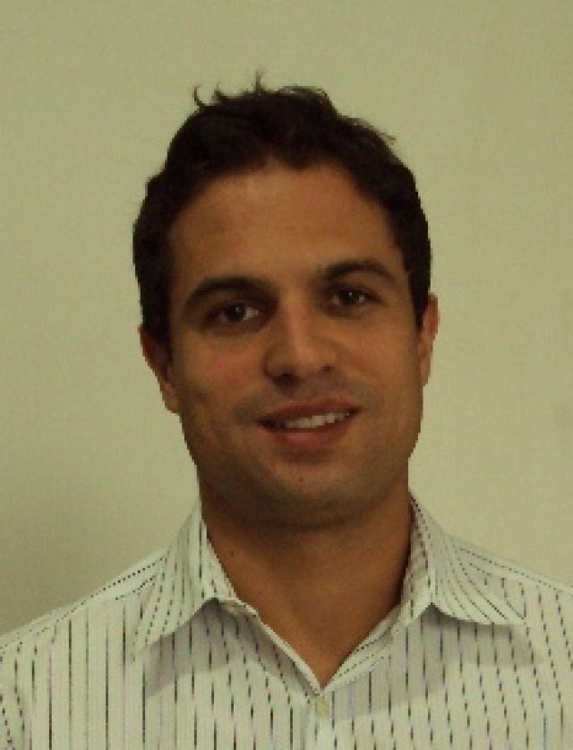
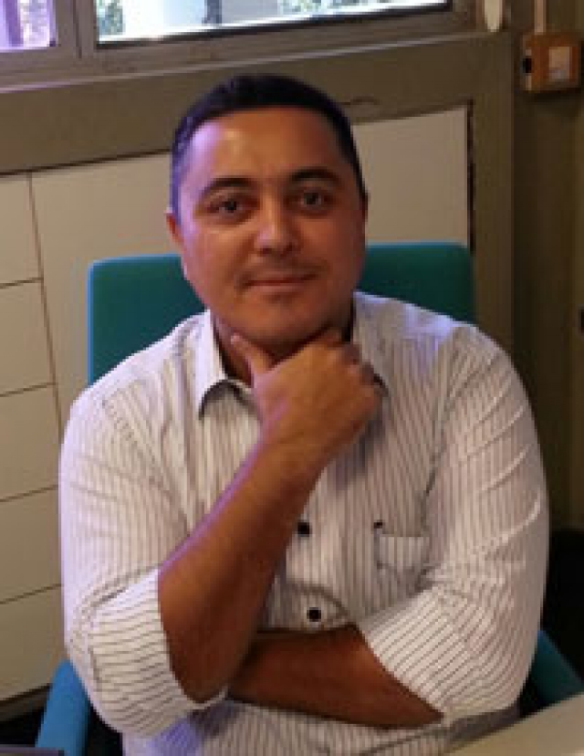
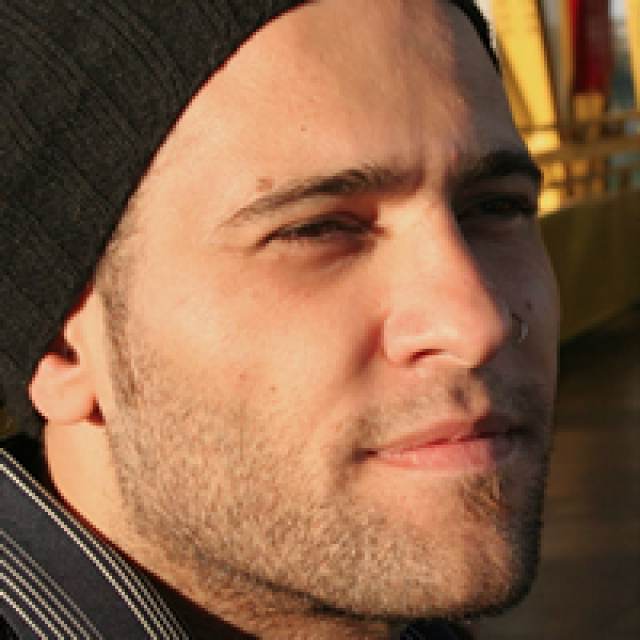
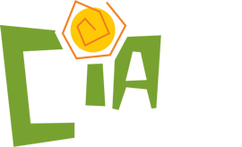

-

Márcio Rios
CEO&Founder do Gbfor, Engenheiro Civil e Professor na UNIFOR.
"Conheci a Christie Bechara através de um grupo de profissionais que trabalham com a temática da sustentabilidade na Cidade de Fortaleza, mas tenho certeza que já nos encontramos em outras dimensões, pois nada é por acaso...
Acreditava ter uma visão sistêmica da sustentabilidade, mas estava sempre focado em minha área, a construção civil. Após conhecer os projetos da Cia Sustentável e com as orientações de coaching da diretora Christie Bechara, pude expandir os horizontes estratégicos, e com esta grande ajuda parti para uma reestruturação do modelo de gestão da minha própria empresa.
Observando o seu potencial, capacidade intelectual e moral, logo a convidei para ingressar ao time de consultores do GBfor. E, atualmente, digo que o Gbfor e a Cia Sustentável são fortes parceiros de negócios, atuantes pelo desenvolvimento sustentável e gestão integrada direcionada para a sustentabilidade do ambiente construído.
Recomendo a Cia Sustentável porque aderir a Sustentabilidade é uma forma de realizar uma gestão mais equilibrada entre as dimensões ambiental, social ou econômica e, se algum desses elementos não estão inseridos na estratégia empresarial, seguramente a curto ou longo prazo, a empresa estará direcionada rumo a um gestão desequilibrada - e isso, poderá repercutir diretamente nas perdas, o chamamos de mudas, na filosofia Lean Thinking. Os serviços da Cia Sustentável, certamente, ajuda gestores a realizar melhor o desdobramento estratégico das metas sociais e ambientais da empresa." -
Roberto A. Rosa
Advogado. Especialista em Gestão Integrada de Qualidade, Meio Ambiente, Segurança e Saúde no Trabalho e Responsabilidade Social. Sócio-diretor do escritório Bueno & Rosa Advogados Associados.
"Tive a oportunidade de conhecer esta grande amiga e excelente profissional há mais de uma década atrás, quando trabalhamos juntos em um escritório de advocacia e todas as atividades que desenvolvemos em conjunto foram sempre muito positivas.
A despeito de nossa amizade, bastou pouco tempo ao lado da Christie, para notar o seu alto comprometimento com as metas e valores das organizações, bem como a
sua habilidade em gerenciar e desenvolver pessoas e processos, sendo certeza de sucesso em qualquer equipe que integre e referência " -
Regis Gomes
Facility e Property Management
"Trabalhei com a Christie no Grupo EDP Energias do Brasil onde desenvolvemos alguns projetos em conjunto, com destaque para a implantação dos processos de sustentabilidade e responsabilidade social.
Como profissional de Facilities and Property Management os processos voltados para a sustentabilidade e responsabilidade socioambiental são fundamentais para o sucesso da minha área de atuação. Com a implantação destes processos foi possível obter uma melhor performance operacional e adequar as instalações físicas as mais altas exigências técnicas em termos de normas e certificações.
O coaching nos fornece todo o apoio e suporte técnico necessário para que possamos atingir nossos objetivos de maneira consistente e ágil. A Christie Bechara desenvolve seu trabalho com responsabilidade, comprometimento e apresenta um conhecimento técnico consistente." -

Marlete H.
Gestora Hospitalar (Rio Grande do Sul - Fortaleza)
"Tive a oportunidade de ser coachee (cliente) da Christie e posso afirmar que se trata de uma excelente profissional, extremamente qualificada técnicamente, e com imensa habilidade para exercer a função de um verdadeiro coach.
Christie passa uma confiança rara, muito prudente e focada nos objetivos definidos, fornece o suporte necessário para alavancar seu cliente no alcance do resultado esperado...
Com a Christie e com o Coaching descobri o mais difícil, as respostas mais reais, que estavam comigo." -
Isabella Mattos
Supervisora de Núcleo APA do Rio Pacoti,Coordenadoria de Biodiversidade - COBIO
"Tive a oportunidade de Trabalhar com a Christie Bechara no desenvolvimento de projetos socioambientais para as comunidades presentes em Unidades de Conservação do Estado do Ceará gerenciadas pelo CONPAM. Trabalhei com uma profissional competente, ética e totalmente comprometida com o resultado do trabalho e com o público alvo. A Christie Bechara registrou seu profissionalismo no desenvolvimento e efetivação dos projetos de cunho socioambiental que implementamos." Isabella Mattos, Supervisora de Unidade de Conservação - Conselho de Políticas e Gestão do Meio Ambiente (CONPAM) -

Fabio de Almeida Pinto
Administrador, Mestre em Sustentabilidade e Responsabilidade Social Corporativa , Analista Comercial - Sustainable Carbon
"Tive a oportunidade de trabalhar com a Christie na área de Sustentabilidade da Construtora Camargo Corrêa. Seu amplo conhecimento sobre o que é responsabilidade social no contexto político-econômico em que vivemos, aliados a suas notáveis habilidades de comunicação e relacionamento, lhe proporcionam grande sensibilidade e capacidade para direcionar a atuação de outros profissionais. Em meu caso, busquei absorver ao máximo estas características quando fiquei responsável por funções por ela desenvolvidas até então, cujo reconhecimento pelos profissionais orientados era evidente. Por fim, acredito que o coaching em sustentabilidade pode contribuir muito para a carreira de profissionais em diversas funções, direta ou indiretamente ligadas ao tema, que queiram ter uma visão sistêmica de seus desafios e, dessa forma, tomar decisões corretas." -

Eliana Sader
Sócia Diretora da SADER- Consultoria em Psicologia Organizacional
"A experiência que fui adquirindo em minha vida e em meu trabalho com profissionais de empresas, em sua maioria líderes, reforçou minha crença sobre a influência das situações extra-profissionais, no desempenho do papel profissional.
A trajetória de cada um possibilita aprendizagens que o ensino formal não consegue suprir. É o que eu chamo de “escola da vida”. Ela está aí, só nos resta aprender. Há trajetórias de vida que favorecem o crescimento pessoal e como consequência enriquecem o papel profissional. No que pude acompanhar da trajetória da Christie, sei que a vida a expôs a situações complexas. De forma sábia ela conseguiu transformar as ameaças em oportunidades e encontrar alternativas de ação adequadas. Com certeza também aprendeu com o que viveu.
Seu interesse em trabalhar com sustentabilidade vem de muito tempo. Houve momentos em que sair desse caminho seria a decisão mais fácil e cômoda, mas optou por seguir sua vocação.
A construção de uma realidade sustentável requer visão sistêmcia e de longo prazo. Entendo que Christie se preocupa com esses requisitos em sua vida. Quando a postura que se tem na vida é semelhante à exigida no seu trabalho, se consegue uma capacidade fundamental e escassa: a coerência.
A junção de vocação, coerência e foco é um privilégio. Igualmente privilegiadas são as pessoas que podem contar com uma profissional assim." -

Diarley Almeida
Coordenador de Recursos Logísticos e de Patrimônio do Estado do Ceará, na Secretaria do Planejamento e Gestão – SEPLAG e Consultor de Empresas nas áreas de Planejamento Estratégico, Comercial
“Tive a oportunidade de conhecer a Christie no curso: Professional & Self Coaching – PSC, do Instituto Brasileiro de Coaching – IBC e aplicar o processo de Coaching nela. Nosso compromisso com a inovação e a busca por resultados sustentáveis em nossos negócios, despertou uma grande afinidade e então Christie me apresentou o projeto: CIA. Sustentável. A sua visão de sustentabilidade e suas idéias sobre uma nova abordagem para o tema, fizeram repensar meus conceitos e suas aplicações no negócio da organização em que trabalho e nas empresas em que eu preste consultoria. Estou recomendando e recomendo tê-la no staff das empresas, pois trata-se de uma profissional com experiência em organizações locais, nacionais e internacionais, antenada com o mercado, de conduta ética, com capacidade para atuar em empresas de todos os portes.” -

Billy Saga
Presidente, Movimento SuperAção
"Conheci Chris em um evento sobre RH e Inclusão há alguns anos atrás. Na época eu era responsável pela Gerência de Diversidade da Diretoria de Recursos Humanos da MAPFRE Seguros. Trocamos algumas idéias no coffee break do evento e alguns poucos minutos nossa relação criou afinidade. Desde então, o vínculo se fortaleceu, graças a interatividade permitida pela globalização e internet, de forma recíproca, um acompanha a atuação do outro em áreas distintas, porém muito parecidas ideologicamente.
Hoje estou Presidente da Ong Movimento SuperAção, organização que atua em defesa dos direitos das pessoas com deficiência e estou muito feliz com a notícia da implantação da Cia. Sustentável. Existe uma frase de uma música que diz - Há os que não sabem o que acontece, os que sabem o que acontece e os que fazem acontecer...Chris Bechara, na minha opinião, se encaixa na categoria dos criadores de idéias que podem mudar o mundo. Estou otimista e vibrando positivamente para que essa nova empreitada, chamada Cia. Sustentável, seja cada vez mais bem sucedida e enquanto isso, junto com essa parceira que se tornou uma amiga, vamos articulando os planos de atuação da Ong Movimento SuperAção em Fortaleza. Em breve!
Bons momentos"
-
Andréia de Mello Silva
Coordenadora de Comunicação e Responsabilidade Social no Consórcio UFN3
"Impossível falar sobre a Christie desvinculando lado profissional e pessoal, sobretudo porque ela impõe um olhar humano em tudo o que faz. Nos conhecemos quando eu desempenhava a função de coordenadora de Comunicação e Responsabilidade Social em uma das maiores obras do Brasil. Tínhamos naquele momento uma missão gigante: implantar uma Gestão de Responsabilidade Social integrada e que atendesse à necessidade de aproximar pessoas em uma estrutura repleta de peculiaridades. Talvez seja esse, em minha opinião, um dos maiores valores em sua atuação, a capacidade de unir o olhar técnico e humano em projetos complexos de gestão. A Christie, de forma muito habilidosa, nos apoiou no caminho de análise crítica, reconstrução do conceito que desejávamos e idealização do plano de atuação para atingirmos nossa meta. Essa experiência me fortaleceu na atuação e inseriu uma visão sistêmica, ousada e assertiva para as ações. Agregado a tudo isso, gostaria de destacar também, o nível de conhecimento e a dedicação incansável dessa profissional nos mais diferentes eixos que compõe os sistemas de gestão socioambiental e desenvolvimento sustentável." -

Adriana Costa
Jornalista (São Paulo - Fortaleza)
“Tive a oportunidade de trabalhar com Christie Bechara no desenvolvimento de um projeto conjunto entre as áreas de Sustentabilidade e Comunicação de uma empresa no Ceará. Christie é uma profissional extremamente comprometida, com foco no resultado e com uma visão global de sustentabilidade. É essa sua visão global que ajuda as empresas e as pessoas a entenderem a sustentabilidade de forma ampla, indo além do mero conceito de ambientalmente correto.”
